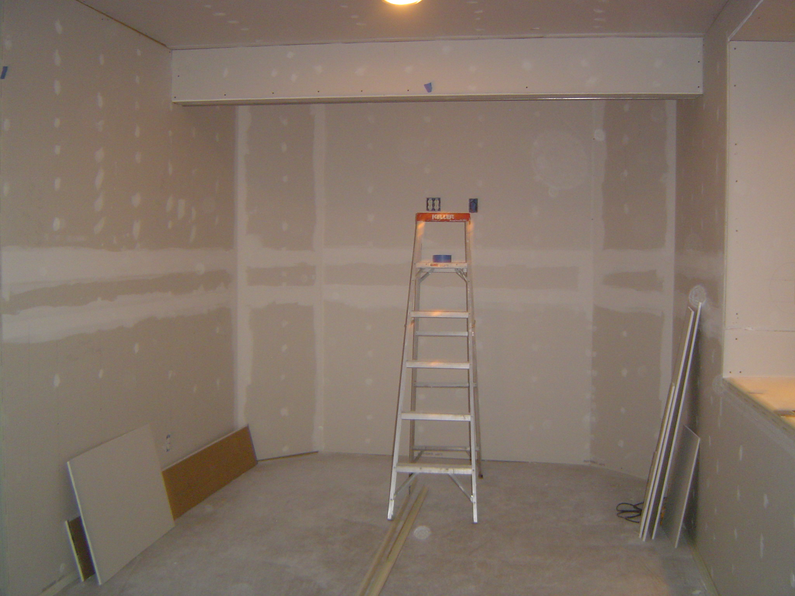
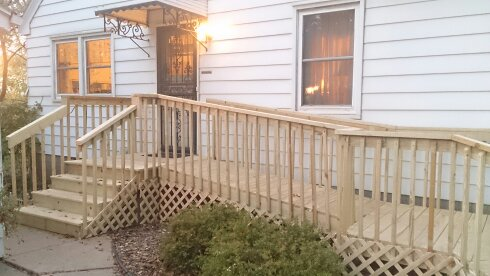

<!--
  Generated template for the ProjectListPage page.

  See http://ionicframework.com/docs/components/#navigation for more info on
  Ionic pages and navigation.
-->
<ion-header>

  <ion-navbar>
    <ion-title>project-list</ion-title>
  </ion-navbar>

</ion-header>


<ion-content padding>

  <ion-item class="item-wrapper">
    <ion-thumbnail item-start>
      
    </ion-thumbnail>
    <h2>Angie's Basement</h2>
    <p>Dry Wall • 2017</p>
    <button ion-button clear item-end></button>
  </ion-item>
  <ion-item class="item-wrapper">
    <ion-thumbnail item-start>
      
    </ion-thumbnail>
    <h2>Pastor Williams</h2>
    <p>Access Ramp • 2016</p>
    <button ion-button clear item-end></button>
  </ion-item>

</ion-content>
